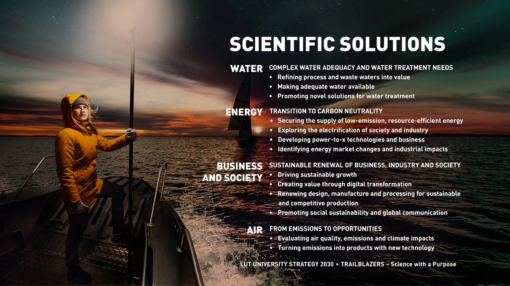

CT10A9900 学习导论 DD Studies · 第 01 / 04 讲
第 1 讲 · 软件工程系、学习环境与课程要求
Software Engineering at LUT, Study Environment and Course Requirements
所属章节：第 1 章 学习环境与团队协作
资料来源 · 1 项 / 已附 0 项
3_Lectures_1_SSEIntro2026.pptx.txt未附原文件
未附文件仅列原始名称；版本与核对日期由维护者登记。
本讲定位
CT10A9900 是双学位（Double Degree）软件与系统工程专业的第一门“学习导论”。它不讲编程，而是把接下来三年要用的东西一次交代清楚：你所在的院系与学位阶梯、毕业后的岗位地图、必须遵守的 AI 规则、四个必做作业，以及遇到问题时该找谁。
课件把内容分成四块：LUT 的软件工程、软件工程的职业路径、借助个人学习计划（PSP）按时完成学业、课程本身说明。本讲处理第一、二块与课程要求，团队协作、学位结构与 PSP、CV 作业分别放在第 2–4 讲，四讲合起来覆盖整门课。
学完本讲你应当能够：
- 说清软件工程系的两个校区与学士—硕士—博士三段学位阶梯的年限与学分
- 把课件列出的岗位按“开发与架构 / 产品与支持 / 领导与其他”三类归档
- 区分产品公司与咨询公司，并判断一个岗位属于哪一类
- 在 Sisu 中查一门课的先修要求，并据此判断本学期能否报名
- 按 LUT 要求写出合规的 Declaration of AI usage（AI 使用声明）
一、这门课是什么
课程全名是 Introduction to DD Studies in Software and Systems Engineering（双学位软件与系统工程学习导论），2025 年 9 月 1 日至 2026 年 4 月 17 日在 Lahti 校区面授。课件署名 Katja Karhu（Junior Researcher）与 Maria Paasivaara（Professor），标注日期 02.09.2025。
课程页给出的四个内容块是：Software Engineering at LUTCareer Paths in Software EngineeringCompleting your studies in schedule with the help of personal study plan (PSP)About the course。这不是随手排的顺序：先知道自己在哪个组织里读书，再知道读完之后去哪里工作，然后才知道这三年怎么排课，最后才是这门课怎么考。
二、软件工程系与两个校区
软件工程系（Department of Software Engineering）成立于 2020 年，在 Lappeenranta 与 Lahti 两个校区同时运作。课件用两张城市地图把两地并列，说明同一个系跨校区组织教学与研究。
对你的实际影响很具体：课程、辅导（tutoring）、自习空间与实习机会可能分布在两个城市；看课表时必须同时确认城市、教室、时间三件事，而不是只看课程代码。第 6 讲的数字导览会说明，上课地点只在 Time-Edit 里给出，这正是一个跨校区院系必须依赖排课系统的原因。
三、学位阶梯：学士 → 硕士 → 博士
学士（Bachelor）之后是本专业方向的硕士项目（Master’s programmes in software engineering）；硕士之后是博士阶段。LUT 的博士教育由 LUT Doctoral School（LUT DS）统筹：它由学校的博士项目组成、在校级运作，在博士项目之间传播良好实践，并对博士教育提出建议。
课件给出的三个硬数字要记住：博士学位约需 3–4 年全日制学习；licentiate（副博士学位）通常 2 年全日制；博士阶段的学习范围为 30 ECTS cr。LUT 的博士学位按具体研究领域（research fields）规划与组织，不是按课程清单堆出来的。
| 阶段 | 英文 | 年限 / 学分（课件原文） |
|---|---|---|
| 学士 | Bachelor’s degree | 项目按三年毕业设计（见第八节） |
| 硕士 | Master’s programmes in software engineering | 学士之后的下一段，具体项目见学位结构 |
| 副博士 | Licentiate degree | 通常 2 年全日制 |
| 博士 | Doctoral degree | 约 3–4 年全日制；博士阶段学习 30 ECTS cr |
四、职业路径：一张岗位地图
4.1 开发与架构
软件开发的岗位包括 software developer / designer、DevOps engineer、software tester、test automation developer / architect、UX designer。架构方向包括 solution architect、enterprise architect、technical architect 等。课件用「Etc…」明确表示这只是示例，不是完整清单。
4.2 产品管理与支持性职能
产品管理方向有 product owner、product designer、service designer；支持性活动（supporting activities）包括 information security、IT infrastructure、IT support、IT compliance、operations、sales。注意 sales 被归在支持性活动里——软件公司的销售卖的是技术方案，需要读得懂产品与架构。
4.3 领导与其他
领导方向是 team leader 与各类 managerial roles，另加 business development；其他方向包括 AI specialist、data scientist、agile coach / Scrum master、researcher、university teacher、entrepreneurship。课件的结语是：“Your bachelor’s degree can be a basis for a multitude of different career paths”——学士学位是多种职业路径的共同基础，而不是一条单行道。
| 类别 | 课件列出的岗位 | 共同能力 |
|---|---|---|
| 开发与架构 | developer / designer、DevOps、tester、test automation、UX；solution / enterprise / technical architect | 写代码、读代码、系统分解 |
| 产品与支持 | product owner、product designer、service designer；information security、IT infrastructure、IT support、IT compliance、operations、sales | 理解需求、跨团队沟通 |
| 领导与其他 | team leader、managerial roles、business development；AI specialist、data scientist、agile coach、researcher、teacher、entrepreneur | 组织协作、领域专精 |
五、产品公司还是咨询公司
课件把软件公司分成两类：产品公司（product companies）开发并销售自己的软件产品；咨询公司（consulting companies）向其他公司提供软件顾问（开发者、测试者等）或承接软件项目。第三类容易被忽略：许多“传统”企业与组织内部也有 IT 与软件工程岗位。
三类雇主的差别不在技术栈，而在你每天面对的对象：产品公司面对自己产品的用户与长期演进；咨询公司面对客户的需求、合同与交付期限；传统企业的 IT 部门面对内部业务流程与遗留系统。
| 维度 | 产品公司 | 咨询公司 | 传统企业的 IT / SE 岗 |
|---|---|---|---|
| 你做的对象 | 自家产品的一个模块或一条产品线 | 客户项目，按合同交付 | 内部系统与业务流程 |
| 节奏来源 | 产品路线图与版本发布 | 客户排期与验收节点 | 业务需求与合规要求 |
| 能力侧重 | 长期可维护性、领域深度 | 快速理解新领域、沟通与交付 | 系统集成、稳定运行 |
六、一位教师的职业故事（Katja Karhu）
课件用一整页讲 Katja 自己的路径，目的是让你看到“职业不是直线”。按年份拆开：
| 年份 | 事件 |
|---|---|
| 1999 | 在 LUT 开始学习 |
| 2000 | 互联网泡沫（dot-com bubble），实习机会很难找 |
| 2005 | 在 LUT 做研究/教学助理 |
| 2007 | 从 LUT 硕士毕业 |
| 2008 | 进入一家 Nokia 的分包商工作 |
| 2010 | 金融危机后 Nokia 收缩业务，被裁员 |
| 2010 | 自己创业；她的评价是“这不适合我，如果重来，我希望有一支技能互补的团队” |
| 2012 | 重新求职，进入 Finago Group 做财务管理软件开发 |
| 2012–2024 | 在 Finago Group 工作 |
| 2024 | 成为 LUT 的博士研究员（doctoral researcher） |
| 至 2028 | 向 Finago Group 请学习假（study-leave） |
这段故事给出三条可迁移的结论：第一，行业周期会打断个人路径，实习与第一份工作的时间窗要提前布局；第二，创业失败往往不是技术问题，而是缺少技能互补的团队；第三，读博可以是职业中期的选择，而不是只有应届一条路。
七、求职与网络：课件的 Key Takeaways
课件明确提醒：暑期实习要尽早开始找，有些岗位的申请期早在 12 月就开放。此外，软件工程之外的工作经验同样被高度重视——客服、销售、仓库、教学助理都能证明可靠性与沟通能力。
网络（networking）不是加好友，而是让自己出现在有人的场合：参加 meetups、活动、招聘会（recruitment fairs），产业讲者来课堂时主动提问与交流。课件把同伴放在最高位置：“Your peers are your most valuable network”——在学习中交朋友，参加 guilds（学生行会）与 student union（学生会）组织的活动与社团。
- 每年 12 月起定期查看暑期实习岗位，而不是等到春天
- 把非软件岗位的经历也写进 CV，并写清可迁移技能
- 每学期至少参加一次招聘会或企业宣讲，并当场提问
- 加入一个 guild 或社团，承担一件具体的事（而不只是挂名）
八、PSP 与三年默认进度
学士项目是按“三年毕业”设计的。课件用一句反直觉的话提醒你：“Studying faster does not mean you can graduate faster”——提前修课不等于提前毕业，因为毕业受模块学分、先修链与学期开设限制。按个人学习计划里的默认课表与课程建议走，会让自己的生活更轻松。
推荐节奏是每学年 60 credits。这个数字不是上限，而是留出余量的设计值：它保证你有时间休息与恢复、管理自己的生活（课件用 adulting 这个词）、照顾身心健康、维持朋友关系、做职业网络与实习、并按时完成学业。
8.1 先修课（prerequisite）
有些课程必须先完成另一门课才能报名，这些约束必须体现在 PSP 里。Sisu 中能看到某门课是否要求先修课。课件给的例子是：要报名 Object-Oriented Programming，必须先完成 Fundamentals of Programming 与 Software Engineering 两门。9.9.2025 的那次课是 PSP workshop，由学习辅导员 Lotta 带着你现场做自己的学习计划。
8.2 夏季学期
学校允许在夏季学期（5–8 月）学习：许多课程 6 月 1 日开始、7 月 31 日结束。夏季学习不是强制的，它的主要用途是补救——如果某门关键课程没过，夏季是唯一不拖慢后续链条的窗口。
8.3 奖学金
按时完成学业有奖学金机会。学校每月通过邮件（发件人 LUT.graduation@lut.fi）向符合条件的毕业生发送问卷；奖学金一般在毕业后两个月内发放，逾期申请不被接受。PHP Foundation 向“在企业完成学士论文”的软件与系统工程学生提供 500 欧元奖学金；同一份在企业完成的学士论文不再获得其他奖学金（课件举例 VITAKO）。
课件的落脚点很实在：学习的最大动机仍应是拿到一份有趣的工作，薪水总会比这些奖励更好。奖学金是副产品，不是目标。
8.4 按时完成的 tips
先照顾好基本需求：恢复与休息、食物、维生素 D。然后是自己领导自己（lead yourself）：设定清晰目标、尝试不同的学习技巧（但避开“整夜不睡加一壶咖啡”那种）、与同伴分享成果、给任务排优先级、为忙碌期（如考试周）提前减少干扰、提前备餐、设定边界、压力期结束后安排恢复——你不可能一直 100% 运转。如果撑不住，去找帮助，学校有一整套支持服务（课程页面的 Other resources 也放了入口）。
九、找谁帮忙：三层支持
| 角色 | 姓名与联系方式 | 负责什么 |
|---|---|---|
| Study counsellor（学习辅导员） | Lotta Meriläinen，lotta.merilainen@lut.fi，050 439 9915 | 一般学习指导与咨询；PSP 的审阅、咨询与一般指导；先前学习或在外完成学习的学分认定（inclusion 或 replacement）；学习权延期申请 |
| Study advisor（学习顾问） | Liam Hallanoro，liam.hallanoro@lut.fi | 由 LUT 在校学生担任，处理实务：Sisu 中课程与考试的报名、逾期报名、与课程相关的问题（如学习计划的排课） |
| Academic advisor / Teacher tutor（教师导师） | Siiri Leppälampi，siiri.leppalampi@lut.fi | 本学位项目的教师，负责专业发展与职业规划相关的问题 |
Lotta 的服务方式：可通过 Bookings Teams 预约线上咨询（预约时注意选择 Lotta Meriläinen）；自 4.9.2025 起每周四 11–17 在 Lahti 校区 A142 房间，可以邮件预约，也可以路过时直接聊。
十、AI 使用规则（全课程通用）
课件把规则压缩成一句话：“Rule-of-thumb: always be transparent of your AI usage!” 具体展开为：所有课程都必须披露/声明 AI 使用情况，即使你没有用 AI；每门课有自己的 AI 说明，必须先读；有些课程或作业完全禁止使用 AI；情况不明时联系教师。还要记住 AI 不是所有任务的好工具：永远对 AI 生成的文本做事实核查。课件推荐的读物是 Emily M. Bender 与 Alex Hanna 的 The AI Con。做小组作业前，先读该作业的 AI 说明，并讨论组内偏好（不用 AI / 允许 AI）。
10.1 Declaration of AI usage 必须写什么
LUT 软件工程系实施的课程要求：所有包含设计与写作任务的学生提交作品，都必须附一份 “Declaration of AI usage”（芬兰语 Ilmoitus tekoälyn käytöstä）。声明放进提交的报告，内容二选一：
- 列出在本文档内容开发中使用的所有 AI 系统，并逐一说明如何、在哪里使用（插图、校对、获取文本想法、生成图表等）；
- 明确声明本次作业没有使用任何 AI 辅助或工具。
这份声明是提交的强制部分：漏掉即视为作品不完整，不予评分。反过来，声明“没有使用 AI”但 Turnitin 的 AI 检测得分很高，本身就足以构成不合格的理由。课件原话还提醒：Turnitin 同时检查 AI 使用与整体相似度，永远不要把任何内容直接复制粘贴进作业。
10.2 AI 与软件工程学习
课件对“AI 会不会取代开发者”的回答是条件式的：你必须学会编程基础；必须能阅读并理解代码，才能定位与修复问题；生成式 AI 不总是产出高质量代码，它更擅长解决已经存在的问题；你还要学会与团队中的人（例如资深开发者）沟通；AI 不一定给出正确答案。企业在持续投入生成式 AI，寻找的是开发功底扎实、同时会用 AI的开发者；同时也要意识到存在 AI 泡沫的可能。Moodle 里有 AI Quiz，用来自测你对 LUT AI 指南的掌握。
十一、课程要求：学分、作业与学习成果
课程的计量方式：1 ECTS 学分约等于 27 小时工作；课程贯穿 Periods 1–4（整个学年）；有四个必做作业，其中作业 1 与 2 在线完成。
| 作业 | 主题 | 截止 |
|---|---|---|
| Assignment 1 | Information searching and Information Security（信息检索与信息安全） | 9 月底 |
| Assignment 2 | Personal Study Plan（PSP，在 9.9 课上可获得协助） | 9 月 16 日 |
| Assignment 3 | CV | 10 月底 |
| Assignment 4 | Academic ethics（学术伦理） | 1 月 |
学习成果（Sisu 原文）：学生了解大学学习的要求与目标，包括 LUT 信息安全培训课程的材料；熟悉学习所需的各类工具与数据库；吸收让学习更高效所需的信息与技能；理解创业式学习（entrepreneurial learning）的意义。具体能力有五项：能使用学校的内部与外部数据库获取学习所需的科学知识；能按学术格式报告；能发展自己的学习技能；能设计并管理用于学习的时间；能规划并遵循符合个人职业目标与优势的课程体系。
| 能力（中文） | Sisu 英文原句 |
|---|---|
| 使用校内与外部数据库获取科研知识 | is capable of using both internal and external databases of the university for acquiring scientific knowledge |
| 按学术格式报告 | is capable of reporting in academic format |
| 发展学习技能 | is capable of developing his/hers learning skills |
| 设计并管理学习时间 | is able to design and manage the time used for studying |
| 规划并遵循符合个人目标的课程 | is able to plan and follow a curriculum that meets his/her personal career goals and strengths |
课件最后的 Final takeaways 只有六句，但每句都对应一个动作：学会照顾自己的身体与心理；对自己友善；完成 PSP；遵循三年默认课表、不要贪多；9.9 那节课在 Lotta 指导下做 PSP；认识同学——他们是你最重要的职业网络；以及，主动求助。
本讲的 AI 规则是全课程底线，三处表述要连读：所有课程都必须声明，即使没用也要写明“未使用”；每门课有自己的 AI 说明且优先；声明是提交的强制部分，漏掉即视为不完整不予评分。原话 always be transparent of your AI usage 把判断落在透明，而非“用得巧不巧”。
把它与后面两门 MOOC 对照会更清楚：循环经济课完全禁用 AI，气候课允许但须披露——同一所学校里规则按课程定。声明中若写“未使用”，而 Turnitin 的 AI 检测得分很高，本身就构成不合格理由，所以“永远不要把任何内容直接复制粘贴进作业”。
芬兰学术邮件文化偏直接但有格式：①主题栏写 课程号 + 事项；②称呼 Dear Professor X（首次）或 Hi X（回复中）；③第一段一句话说清诉求（I am writing to ask whether…）；④结尾 Kind regards, Full name + student number。工作日回复通常 1–3 天，周末与假期（7 月全芬兰放暑假）不要催——提前计划比事后道歉有效。
原版 PPT 图片（SSE 课程介绍 PPT）





SSEIntro2026.pptx 的内嵌媒体（已过滤主题装饰小图），文字要点在上方知识精讲中。| English | 中文 | 说明 / 例句 |
|---|---|---|
| ECTS credit | 学分 | One ECTS credit equals about 27 hours of work. |
| personal study plan (PSP) | 个人学习计划 | A plan in Sisu covering the structure of studies and the timeline. |
| prerequisite | 先修课 | A course that must be completed before enrolling on a more advanced course. |
| Declaration of AI usage | AI 使用声明 | A mandatory statement listing AI systems used and how, or declaring that none were used. |
| study counsellor | 学习辅导员 | Handles PSP review, credit transfer, and extension of study right. |
| study advisor | 学习顾问 | A LUT student helping with practical Sisu enrolments and scheduling. |
| teacher tutor | 教师导师 | A teacher of the degree programme advising on professional development and career planning. |
| doctoral degree | 博士学位 | About 3–4 years of full-time studies; doctoral studies cover 30 ECTS cr. |
| licentiate degree | 副博士学位 | Usually two years of full-time studies. |
| product company | 产品公司 | Develops its own software product or products. |
| consulting company | 咨询公司 | Provides software consultants or software projects to other companies. |
| credit transfer | 学分认定 | Inclusion or replacement of studies completed elsewhere. |
| Turnitin | 查重与 AI 检测系统 | Checks both AI-generated text and overall similarity. |
| study right | 学习权 | The right to study towards a degree; extensions are applied for separately. |
第一步，查先修。在 Sisu 打开该课程页，看 Prerequisites 栏；课件给的例子是必须先完成 Fundamentals of Programming 与 Software Engineering。
第二步，查状态。在 Sisu 的已完成学习（completed studies）里确认这两门是“已完成”而不是“在修”或“报名中”。
第三步，查学期。在 PSP 的 Timeline 里看这两门先修课是否排在目标学期之前；若排在同学期，则本学年无法满足链条。
第四步，定方案。若先修未完成，本学期不报 OOP，改报可并行且无先修要求的课程，并把 OOP 顺延到下一学年；随后在 PSP 里调整，必要时约 Lotta 审阅。
判断标准：先修课全部“已完成”＋Timeline 顺序正确＋该学期确实开设，三条同时满足才报名。
60 credits 在整个学年（Periods 1–4）里分配，均值是每 period 约 15 credits；实际分配要按课程的先修链与开课周期调整，而不是机械四分。
若某门关键课没过：先确认它是否后续课程的先修。如果是，暑期（6 月 1 日–7 月 31 日有许多课）补修是唯一不拖慢链条的窗口；暑期学习非强制，但此时属于“补救性投入”。
若不补，代价是下一学年的进阶课报不上，PSP 的 Timeline 要整体后移，可能影响三年毕业与奖学金资格（按时完成才有奖学金机会）。
决策规则：关键课＝“是后续课程的先修”或“本学年必修模块”。是→暑期补；否→可在下一学年正常学期重修，优先保住暑期休息与实习。
合格写法：“Declaration of AI usage: Microsoft M365 Copilot was used (1) to shorten and polish the abstract of Section 3 — the original text and all technical claims were written by the authors; (2) to generate the first draft of the process diagram in Figure 2, which was then redrawn and verified by the authors. No AI was used to produce the results or the literature review.”
为什么合格：点明了系统名称（M365 Copilot）、逐一说明用途与位置（摘要、图 2）、并说明人对结果的复核。既没有隐瞒，也没有把 AI 的产出说成自己的分析。
不合格写法：只写“AI was used”，或写“No AI used”但正文有明显 AI 痕迹（Turnitin AI 得分高），或干脆不写声明（作品视为不完整，不予评分）。
（a）“我去年在另一所大学修过两门课，能不能算进学位？”→ study counsellor（Lotta），因为她负责 credit transfer 的 inclusion / replacement。
（b）“Sisu 里这门课报名按钮是灰的，截止了吗？”→ study advisor（Liam），他处理 Sisu 报名、逾期报名与排课问题。
（c）“我想往数据科学方向就业，硕士该选哪个项目？”→ teacher tutor（Siiri），她负责专业发展与职业规划。
- 写出你所在学位项目“学士—硕士—博士”三段各自的年限与学分要求，并指出哪一段属于 LUT Doctoral School 统筹。
- 把课件列出的岗位归入“开发与架构 / 产品与支持 / 领导与其他”三类，每类至少写三个岗位。
- 某同学想用 AI 生成整份实验报告并直接提交。按本讲规则，指出至少三处违规，并写出正确的替代做法。
- 你的 PSP 里把 Object-Oriented Programming 排在第一学年第二学期，但 Fundamentals of Programming 排在第二学年第一学期。指出问题并给出修改方案。
- 列出你会用到的三个支持角色，并为每个角色写一个“该找他/她”的具体问题。
参考答案与思路
1. 学士按项目三年设计；硕士为 software engineering 方向的硕士项目；博士约 3–4 年全日制、博士阶段 30 ECTS cr；licentiate 通常 2 年。博士阶段由 LUT Doctoral School（LUT DS）统筹，它在校级运作、在博士项目间传播良好实践。
2. 开发与架构：software developer/designer、DevOps engineer、software tester、UX designer、solution architect。产品与支持：product owner、product designer、service designer、information security、IT support、sales。领导与其他：team leader、managerial roles、business development、AI specialist、data scientist、agile coach/Scrum master、researcher、entrepreneur。
3. 违规点：①提交 AI 生成的成品作为自己的作品；②未写 Declaration of AI usage（或写了“未使用”而实际使用）；③若课程禁止 AI 则直接违反课程政策；④未对 AI 文本做事实核查。正确做法：自己写报告，用 AI 只做理解与检查（如让它解释错误、做 code review 式点评），在报告中写明所用系统与用途，并核对每条数据与引用。
4. 问题在于先修顺序颠倒：OOP 要求先完成 Fundamentals of Programming 与 Software Engineering，而后者排在其后，第一学年第二学期必然报不上。修改：把 Fundamentals of Programming 与 Software Engineering 前移到第一学年第一/第二学期，OOP 顺延到第二学年；用 PSP 的 timing template 重新排，并检查每学期工作量是否仍接近 30 credits。
5. 示例：counsellor → “我在国外交换修的课能否计入选修模块？”；advisor → “这门课的考试报名我错过了截止日期，还能补报吗？”；teacher tutor → “我更适合走产品方向还是架构方向？”
开学前两周清单
- 在 Sisu 打开自己的 PSP（eHOPS），确认每个模块（general / language / minor studies 等）都有足够学分
- 确认学位总学分达到至少 180 credits，且各模块状态为 “Selections done”
- 把所有课程排进 Timeline，并启用本学位项目的 timing template
- 逐门检查计划中进阶课程的先修课是否已排在更早学期
- 9.9 带电脑参加 PSP workshop，当场完成初稿
- 9 月 16 日前完成 PSP 并在 Sisu 给 Lotta 发消息
- 把四个作业的截止日期写进 LUT Calendar 并设提醒
- 保存 Lotta、Liam、Siiri 的邮箱到通讯录
- 找到 Moodle 上的 AI Quiz，做完并记录错题
- 在第一次小组作业前，与组员约定 AI 使用规则
提交前 AI 声明自检
- 声明是否已放进提交文件（不是只写在邮件里）
- 是否逐一列出 AI 系统名称（Copilot / ChatGPT / 其他）
- 是否逐处说明用途（插图、校对、想法、图表）
- 是否说明人对 AI 产出的复核方式
- 若确实未使用，是否明确写出“no AI assistance or tools were used”
- 正文是否存在直接复制粘贴的段落（Turnitin 会同时查相似度）
| 源文件 | 位置 | 覆盖内容 |
|---|---|---|
| 3_Lectures_1_SSEIntro2026.pptx.txt | slide 2–3 | 课程名称、授课教师、时间地点、四块内容 |
| 3_Lectures_1_SSEIntro2026.pptx.txt | slide 5–6 | 软件工程系 2020 年成立、Lappeenranta 与 Lahti 两校区 |
| 3_Lectures_1_SSEIntro2026.pptx.txt | slide 8–9 | 学士后硕士项目；LUT Doctoral School、博士 3–4 年、licentiate 2 年、30 ECTS cr |
| 3_Lectures_1_SSEIntro2026.pptx.txt | slide 10–12 | 职业路径三类岗位清单 |
| 3_Lectures_1_SSEIntro2026.pptx.txt | slide 13 | 产品公司与咨询公司；传统企业的 IT 岗位 |
| 3_Lectures_1_SSEIntro2026.pptx.txt | slide 14–15 | Katja 的职业故事；求职与网络 Key Takeaways |
| 3_Lectures_1_SSEIntro2026.pptx.txt | slide 16–19 | PSP、三年默认进度、60 credits/年、先修与计划纪律 |
| 3_Lectures_1_SSEIntro2026.pptx.txt | slide 20–23 | 先修课与 Sisu 示例、夏季学期、奖学金 |
| 3_Lectures_1_SSEIntro2026.pptx.txt | slide 24–27 | 按时完成 tips、counsellor / advisor / teacher tutor 分工 |
| 3_Lectures_1_SSEIntro2026.pptx.txt | slide 28–32 | AI 使用规则、Declaration of AI usage、Turnitin、AI Quiz |
| 3_Lectures_1_SSEIntro2026.pptx.txt | slide 33–35 | Sisu 学习成果、1 ECTS≈27h、四个作业、Final takeaways |
| （跳过） | slide 1、4、7、18、36 | 空白页或纯图片页，无可抽取文字；slide 18 的“60 credits 长什么样”只有图，未据此推断具体课程 |
| （补充） | — | 把 1 ECTS=27 小时换算为“每 period 约 15 credits”的估算、以及“关键课＝后续课程先修”的判断规则，属于基于原文的推算，非课件原文 |